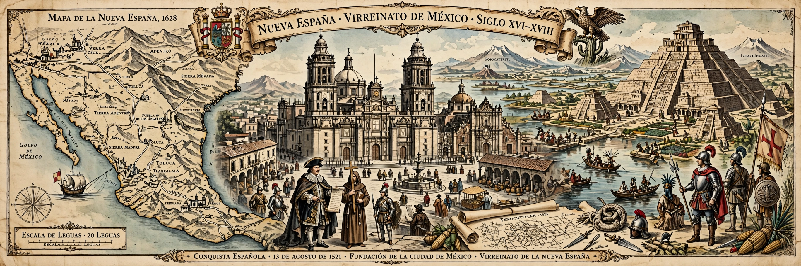

The Viceroyalty of New Spain was a territorial entity of the Spanish Empire, established in 1535 after the Spanish conquest of the Aztec Empire (1519–1521). Ruled by a viceroy in Mexico City, it at its peak covered Mexico, Central America, much of the present-day United States, the Caribbean, Venezuela briefly, and the Philippines via the Captaincy General.
Hernán Cortés conquered Tenochtitlan in 1521. Antonio de Mendoza became first viceroy in 1535. New Spain became the empire's richest colony from silver mines at Zacatecas and Guanajuato, agriculture, and the Manila galleon trade linking Acapulco to Asia. Society was organised in a casta hierarchy of peninsulares, criollos, mestizos, Indigenous peoples and enslaved Africans, with the Catholic Church, encomienda and later hacienda systems central.
After Miguel Hidalgo's revolt in 1810, the Mexican War of Independence ended in 1821 with the Army of the Three Guarantees and the First Mexican Empire. Other territories became independent Central American states, were ceded, or were later annexed by the United States.
New Spain shaped the language, religion, cities, law and borders of Mexico and the American Southwest.
Conquest of the Aztec Empire · Mexico City · Mexican War of Independence